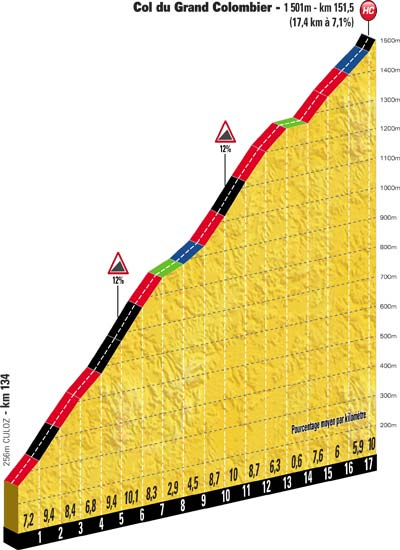

Classement
Parcours
Profil
Côtes
Dernier Km
Km 90.0 - Côte de Corlier - 6.4 km de montée à 5.5 % - Catégorie 2
Km 151.5 - Col du Grand Colombier (1 501 m) - 17.4 km de montée à 7.1 % - Catégorie H
Km 174.0 - Col de Richemond - 7.2 km de montée à 5 % - Catégorie 3

Etape précédente
Retour
Etape suivante